This is the reference document for constructing
BMessage objects as used
in BeOS' standard negotiated drag'n'drop actions. If you're reading it
for the first time, you should probably read the entire thing. If you
want to look up something and you're reading this with a browser, you can
jump to any of the following:
Drag and Drop makes use of a number of elements of the BeOS programming
kit, and you'll need to be at least reasonably familiar with the
following topics, in order to be comfortable reading this document:
The BMessage
class, since dragged objects are sent to their targets
as BMessage
objects. You should understand what a
BMessage
is, how to add data to a
BMessage
or extract data from it, how to send a
BMessage,
and where to put code to handle incoming
BMessages.
The BView
class. The drag and drop action is fundamentally a
GUI
operation, and
BView
objects are the most important objects in handling
GUI events; subclasses of
BView
are where you will most often define
code to both initiate a drag, and handle a drop.
The Translation Kit, if you wish to make use of the BeOS' built-in
translation abilities to (for example) drag a
JPEG image from an
application, to another application that only understands raw bitmaps.
Simple vs. Negotiated Drag'n'Drop
Roughly speaking, you can do two different kinds of drag and drop
operations; both appear the same to the user, but they differ in the
complexity of the background communication between the source of the
drag, and the drop target.
A simple drag'n'drop is one where the action of dragging and dropping
corresponds internally to a single
BMessage
being sent, from the origin
of the drag to the drop target. This was the original drag'n'drop
protocol for the BeOS, and is still highly useful in dragging and
dropping which takes place within a single application, or within a
tightly coupled set of applications which "know about" one another. For
example, you could drag around drawing elements of a drawing program
using this protocol; each drag operation would result in the drawing
application sending a
BMessage
within itself, and that
BMessage would
contain the data necessary to indicate which drawing element had been
moved, and to where. Using the built in drag'n'drop abilities of the BeOS
in this manner will lessen your own workload, since many of the most
basic aspects, such as visually dragging a bitmap around on the screen,
are handled automatically.
A negotiated drag and drop is used in a more general context, when the
originator of a drag and the receiver (drop target) of that drag do not
necessarily know anything about one another. This more general
drag'n'drop is necessary if we wish to make usage of the BeOS,
particularly it's media-related applications, as intuitive to the user as
possible. For example, the user should expect to be able to drag an image
from one graphics program (say a viewer) to another graphics program
(such as a paint program) with no difficulty. However, there are many
different underlying data formats for representing images, and the two
graphics programs will have to negotiate (with the aid of the Translation
kit) for the most suitable or desirable format.
Note that the negotiated drag'n'drop protocol is not a "hard and fast"
requirement; it is not enforced by the system, and could easily be
modified; for example, you might need a particularly complex negotiation
that takes more steps than defined in the standard. The major user of
negotiated drag'n'drop you are likely to encounter right now is in
Tracker, and we will talk about that in more detail later. Other
applications may support negotiated drag'n'drop or may not. Also note
that a simpler protocol was originally defined, and may still be used by
older applications. It's easy to make your code handle this older
protocol; see the later section on
"Handling
the Old Drag'n'Drop Protocol".
Let's assume the user is working with two applications, and is going to
drag something from the first application (which we'll call the sender
application) to the second application (which we'll call the receiver
application.) In a nutshell, here are the steps that make up this entire
process:
Detection: Code in a
BView
object of the sender application notices
that the user has clicked on something of interest, and started dragging
it. The monitoring code that notices this is usually spread out between
the
BView::MouseDown()
and
BView::MouseMoved()
functions, and typically
has to differentiate between the start of a real drag and drop, or a
click that might (for example) select an object without dragging it, but
that moves just one or two pixels because the user has a slightly jittery
hand. The drag detection code will typically have to use
BView::SetMouseEventMask()
to temporarily enable full reporting of mouse
movement (which is not normally reported to the application, for
efficiency reasons).
Initiation: Once the sender application's detection code has
decided a drag and drop action has been started, it initiates the drag
and drop internally, by creating a
BMessage
object containing information
about the nature of the object being dragged, and then passing that
BMessage to the
BView::DragMessage()
function.
BView::DragMessage() also
determines how the object being dragged appears visually to the user; you
can pass it a
BBitmap,
in which case it will drag a cool picture around
the screen, or you can pass it a
BRect,
in which case it will drag a
boring old rectangular outline. After calling
DragMessage(), the sender's
code should remember to delete its own copy of the
BMessage. Note: The
sender should not delete the
BBitmap
it passes to DragMessage(); this will
be done by the system
Drag: This is the easy part; once the sender application has
initiated the drag, as described in the previous step, dragging a visual
representation around the screen is handled by the system. The next time
application code is invoked is on the . . .
Drop: The user releases the mouse button while the mouse is in a
BView
of the receiver application. This causes the
MessageReceived()
function of the recipient BView
to be invoked, with the dragged
BMessage
as its received message. This is the first of three
BMessage objects that
can be sent as part of a single drag and drop action. We'll call this
first message the drag message. In a simple drag'n'drop, the drag message
can contain just about anything you want it to; since both the sender and
the receiver "know about" one another, they presumably have a common
private protocol, and the receiver can analyze the message and do
whatever is required. In a negotiated drag'n'drop, the drag message does
not typically carry the data that defines the object being dropped; for
example, if you drop a block of text, the message that is dropped
normally does not contain the text that was dragged. Instead, the drag
message contains information about the different formats and methods by
which the sender application may supply the data to the receiver
application, and about which actions the receiver application can request
of the sender application.
Negotiation [optional, used in negotiated drag'n'drop]: The
receiver application replies to the drag message with a second message,
which is dispatched back to the sender application using the
BMessage::SendReply()
function. We'll call this second message the
negotiation message. The receiver creates the negotiation message by
looking through the options supplied by the sender in the drag message,
choosing one or more, and including those option in the message so that
the sender will know which of its possible replies is actually desired.
The negotiation message also contains information about what the receiver
would like the sender to do with the dragged data; for example, if you
drag a file to the Trash, the negotiation message sent back "from" the
Trash will include a request that the sender delete the dragged data.
Data Transmission [optional, used in negotiated drag'n'drop]: The
sender examines the negotiation message sent back to it by the receiver,
to find out which available data format the receiver wants the data in.
The sender then packages up the data, and dispatches it off to the
receiver in the data message. (Optionally, the sender can, at the request
of the receiver, create a file through which it passes the data to the
receiver, rather than passing the data directly in the BMessage. We'll
talk about this when we discuss the details of the drop, negotiation, and
data messages.)
Completion [optional, used in negotiated drag'n'drop]: The receiver
gets the data message from the sender, extracts the desired data, and
uses it in whatever way it wants.
This sounds more complex than it is. A picture is worth a thousand words,
so here is a simplified schematic of the process:

Example: Simple Drag'n'Drop
Before going on to more complex matters, let's see just how simple
"simple" drag'n'drop can be. The code below defines a very simple
application, which lets one drag around a black square in a window. The
application is both the sender (i.e., you click on the square in the
application window to start the drag), and the receiver (you release the
mouse button within the application window, to reposition the square).
Most of the program code is "boilerplate", similar to what would be found
in any application involving a
BView.
Those parts of the code pertaining
specifically to the drag and drop are given in bold.
#include <Application.h>
#include <InterfaceKit.h>
rgb_color black = {0, 0, 0, 64};
const char *APP_SIGNATURE = "application/x-vnd.Be-MyDragnDrop";
const uint32 MY_DRAG_ACTION = 'drag';
class MyDragDropView : public BView {
private:
BPoint _button_click;
BRect _SquareSides;
public:
MyDragDropView(BRect rect) : BView(rect, "",
B_FOLLOW_ALL_SIDES, B_WILL_DRAW) {
_SquareSides = BRect(20, 20, 90, 90);
}
void Draw(BRect where) {
SetHighColor(black);
FillRect(_SquareSides);
}
void MouseDown( BPoint where ) {
if (_SquareSides.Contains(where)) {
SetMouseEventMask( B_POINTER_EVENTS, 0 );
BMessage* drag_message = new BMessage( MY_DRAG_ACTION );
drag_message->AddPoint("click_location", where);
DragMessage( drag_message, _SquareSides, this );
delete drag_message;
}
};
void MessageReceived(BMessage *msg) {
if (msg->what == MY_DRAG_ACTION) {
BPoint clicked;
msg->FindPoint("click_location", &clicked);
BPoint whereto;
msg->FindPoint("_drop_point_", &whereto);
whereto = ConvertFromScreen(whereto);
_SquareSides.OffsetBy(whereto-clicked);
Invalidate();
}
};
};
class MyDragDropWindow : public BWindow {
public:
MyDragDropWindow(BRect frame)
: BWindow(frame, "Drag'n'Drop Example",
B_TITLED_WINDOW, B_NOT_ZOOMABLE) {
interior = new MyDragDropView(this->Bounds());
AddChild(interior);
Show();
}
bool QuitRequested() {
be_app->PostMessage(B_QUIT_REQUESTED);
return true;
}
private:
BView* interior;
};
class MyDragDropApp : public BApplication {
public:
MyDragDropApp::MyDragDropApp() : BApplication(APP_SIGNATURE) {
BRect windowRect;
windowRect.Set(50,50,349,399);
new MyDragDropWindow(windowRect);
}
private:
MyDragDropWindow* theWindow;
};
int main(void) {
MyDragDropApp *theApp;
theApp = new(MyDragDropApp);
theApp->Run();
delete theApp;
}
BMessage Formats in Negotiated Drag'n'Drop
With simple drag and drop, you are free to use
BMessage more or less as
you wish; you simply define a what member constant which will uniquely
identify your dropped message to the target, and put whatever data you
wish into the body of the message. The receiver will examine the what
member of the message and, assuming it understands it at all, should then
know how to extract the data (if any) in the body of the message.
Negotiated drag and drop is different, since it assumes that the sender
and receiver have no implicit knowledge of each other. In order for the
two ends of the action to communicate effectively, they must agree on a
standard protocol between them. This protocol takes the form of an
agreed-up structure for each of the drag message, negotiation message,
and data message, as described in the following sections.
Hint

There's a great little utility called
ViewIt, which should be
available (as part of a package of utilities called Geb's Goodies) on the
usual download sites, such as www.bebits.com.
You can drag anything onto
ViewIt, and it will display the contents of the drag message.
Protocol for the Drag Message
The drag message is the one initially sent out by the sender application.
It must be assigned a what member of B_SIMPLE_DATA by you, the
programmer. The message fields in the drag message can be split into
those that are provided by you, and those that are filled in
automatically by the system. Let's take a look at each of these.
Drag Message Fields Filled In by Your Code
The following drag message fields will need to be filled in by your code.
Detailed descriptions of these fields are found below.
| Field | Description |
|---|
be:types, be:filetypes, and
be:type_descriptions
| These fields
indicates the formats the sender is willing to provide data in, and are
filled in together. |
be:actions
| A list of actions the sender is willing to perform on its
data, at the request of the receiver. |
be:clip_name
| A suggested name for the data being sent, which may be
used at the option of the receiver. This field is optional. |
be:originator,
be:originator_data
| Used to preserve context
information across asynchronous message sendings. |
be:data
| This was used by the old [obsolete] drag'n'drop protocol, to
contain the data being dragged. You don't need to use it with modern
applications. |
Drag Message Fields Filled In by the System
| Field | Description |
|---|
_drop_point_, _drop_offset_
| The values in these fields are set
automatically by the system; do not set them yourself. They give
information about where the drop took place on the screen. |
Detailed Description of the Drag Message Fields
be:types, be:filetypes, and
be:type_descriptions Fields
The main purpose of negotiated drag'n'drop is to come up with an optimal
compromise between the data formats the sender application can provide
something in, and the data formats the receiver can accept that data in.
Accordingly, the three most important message fields in the drag message
are the be:types
and be:filetypes
fields; be:type_descriptions
accompanies the be:filetypes field, so we'll describe it here also.
Each of these fields is filled with a list of string values.
Values for these fields will typically be obtained from the Translation
Kit, by asking the Translation Kit which data formats it can provide the
dragged data in, and filling the fields in with the information returned
by the calls to the Translation Kit. (For example, if appropriate
translators are installed on the system, the Translation Kit might be
able to translate a bitmap into any of
JPEG,
GIF,
PNG, or
TIFF images.)
The specific meanings of these three fields are as follows:
| Field | Description |
|---|
be:types
| each value in this field indicates a data format the
sender is willing to provide its sent data in. This is a string value
(a MIME string, actually), but you won't normally need to know what the
string actually is, since you'll obtain it from the Translation Kit, or
from a predefined constant. If be:types consists of a single element
whose value is equal to that in the global variable B_FILE_MIME_TYPE,
then the sender application is not willing to provide its data in a
BMessage;
the receiver must accept the data through a file, in one of
the formats specified in the be:filetypes field of this message. If
you want to indicate that your application is willing to send its data
via either of a BMessage
or a file, then add B_FILE_MIME_TYPE as the
last element of be:types, after all of the types which can be sent in
a BMessage. |
be:filetypes
| Similar be:types, but a values in this field
indicate formats in which the sender is willing to provide its data via
a file. This can make a lot of sense; for example, if what the user is
dragging around is a 30 megabyte video clip, you probably don't want to
pass this in a
BMessage.
In most cases, be:filetypes will be
identical to be:types. If your application isn't willing to pass data
via a file, then it doesn't matter what (if anything) you put into
be:filetypes. |
be:type_descriptions
| This is just a user-friendly description of
the corresponding format in be:filetypes. It may be displayed
onscreen to the user when the user can choose between several different
data formats during a file save operation. It is not used otherwise. |
In negotiated drag'n'drop, the sender and receiver negotiate not only the
format of the sent data, but also the action performed on that data.
Should the data be copied from the sender to the receiver, moved from the
sender to the receiver, or something else? The first part of this
"actions negotiation" takes place in the drag message via the
be:actions field.
be:actions contains a list of values (32-bit integers actually) which
define the actions the sender is will to perform at the request of the
receiver. No action will actually be carried out until and unless the
receiver requests it. The possible action requests are given by the
following constants:
| Constant | Description |
|---|
B_COPY_TARGET
| The sender is willing to provide a copy of the
dragged object. |
B_MOVE_TARGET
| The sender is willing to move the target over to the
receiver; if the receiver requests this, then after the sender sends a
copy of the data, it will delete its own copy. |
B_LINK_TARGET
| The sender is willing to provide a link to the
target. [xxx what does this mean exactly? If the sender is the Tracker,
I can understand it, but in Chris' document, B_LINK_TARGET is listed as
a general action, not one that is Tracker-specific.] |
B_TRASH_TARGET
| The sender is willing to delete its data without
even sending it. This is useful if, for example, you want your user to
be able to drag something from the application to the Tracker's
wastebasket icon, and have the object removed from the application as a
result. |
In addition to the above four "standard" actions, there are a few actions
which can be carried out specifically when the Tracker is the sender
application [xxx does the Tracker have to be the receiver as well? If so,
should we even document these actions?]:
| Constant | Description |
|---|
B_COPY_SELECTION_TO
| One or more elements (files, directories) are
selected in a Tracker window; the Tracker is willing to copy these
files to an entry_ref type destination, which will be supplied in a
refs field in the negotiation message, should the receiver
application choose this action. |
B_MOVE_SELECTION_TO
| One or more elements (files, directories) are
selected in a Tracker window; the Tracker is willing to move these
files to an entry_ref type destination, which will be supplied in a
refs field in the negotiation message, should the receiver
application choose this action. |
[xxx Chris' document implies the Tracker can also make links due to a
specific Tracker action, is there something like a B_LINK_SELECTION_TO?]
This is an easy one. If present (it doesn't have to be), it contains a
string suggesting a name for the data which will be sent. This name may
be used by the receiver; for example, if data is dragged onto the
Tracker, the Tracker will try to use the value in be:clip_name as the
basis for the name of the clipping file it creates from the data.
However, the receiver is under no obligation to pay attention to
be:clip_name.
be:originator and
be:originator_data Fields
Let's say you're a sender application, and you've asynchronously sent off
a drag message. Then you receive a
BMessage.
Is it the reply to your
original message? And if so, how do you access data about the original
drag (such as where the mouse was clicked) you might need in order to
complete the data message? Since the original drag message was sent
asynchronously, your application went merrily on its way immediately
after sending, and no longer remembers what the heck it dragged off
before. What do you do? This is where be:originator and
be:originator_data come in.
be:originator should be filled in with something that identifies
your application to itself; it doesn't really matter what. We'll see
how this is used in a second…
be:originator_data can be filled in with data about the drag that
you'll need to use later on in the drag'n'drop negotiation. This could
be something as simple as the mouse position, or it could be a much
more complex piece of information about the context of the application
at the time the drag was started. It's up to you, and of course, you
don't have to use be:orginator_data at all.
If you fill in be:originator
and be:originator_data properly on all
of your outgoing drag messages, then here is what your app can do when it
receives a BMessage
that may be a negotiation message responding to a
previously sent (asynchronous) drag message:
Your app checks to ensure that the incoming message has the correct
format for a negotiation message (we'll describe the format of
negotiation messages in a bit). If it does, then go on…
Your app uses
BMessage::IsReply()
to check if the incoming message
is a reply to a previous message.
If the incoming message is in fact a reply, your app uses
BMessage::Previous()
to obtain the original message; the message the
incoming message was sent in reply to.
Now, your app can examine be:originator in the original message,
to see if it recognizes that value as indicating a drag message sent out
by itself. If it does, then the incoming BMessage is in fact a
negotiation message in response to your original drag message; your app
can extract necessary context data from be:originator_data, and go on
to construct and send the data message.
This field was used in the original drag'n'drop protocol to carry the
dragged data. It is not used in the negotiated drag'n'drop protocol.
This field contains a BPoint giving the screen coordinate of the mouse
cursor, when the drag was ended (i.e. when the mouse button was released
and the data dropped.) It's added automatically by the system—you don't
create or add to it yourself.
Whether you have your application display a bitmap or a rectangular
outline during a drag, the dragged area occupies a rectangle. (Though it
may not appear so to the user, since with a bitmap, sections of the
bitmap can be transparent). _drop_offset_ gives
as a BPoint the
distance from the top left point of the dragged area to the position of
the mouse cursor within that dragged area. [xxx I think this is correct
but just want to be sure.]It's added automatically by the system—you
don't create or add to it yourself.
Using a
BMessage
to pass a large amount of data from one application to
another may not be desirable; at the extreme, you may not have enough
memory to accommodate the entire BMessage. If you need to pass large
amounts of data in a drag'n'drop operation, you may prefer to do so via a
file.
As far as passing data by a file goes, the sender application can
indicate one of two things when sending the drag message to the receiver:
The sender can offer to pass the data in a file, as well as via a
BMessage.
The receiver then has the option of accepting the data either
through a BMessage,
or through a file.
The sender can state that it will only pass the data via a file. The
receiver app, if it wants the data, had better agree.
In both cases, the sender's ability to send data via a file is indicated
by a value in the drag message's be:types
field of B_FILE_MIME_TYPE. If
B_FILE_MIME_TYPE is the first entry in the
be:types field, then the
sender will pass data only in a file, and anything else in
be:types
will be ignored; if there are entries in be:types before a value of
B_FILE_MIME_TYPE, then those entries are types with which the sender is
prepared to send data directly in the data message.
If the sender has indicated, via the presence of a B_FILE_MIME_TYPE value
in be:types, that it is willing to pass data via a file, then the
formats in which it can provide that file are listed in the
be:filetypes field. If a value of
B_FILE_MIME_TYPE is not present
somewhere in the be:types field, then the sender is not able to pass
data via a file, and any values in the be:filetypes field will be
ignored.
Protocol for the Negotiation Message
When the receiver application receives the initial drag message from the
sender application, it examines the data message in that message, to
ascertain what actions the sender application can carry out, and how it
can provide the desired data in the final drag message. Using this
information, the receiver application formulates the negotiation message,
which it sends back as a reply to the original drag message using the
BMessage::SendReply() function.
A Negotiation Message is Characterized by its what Member
Recall that the drag message constructed by the sender application
contained (among other things) a be:actions message field, which
indicated the actions the sender was willing to perform upon the dragged
data. The allowable actions (at the time of this writing—further actions
may be added in the future) are given by the following constants:
When constructing the negotiation message, the receiver application will
choose one of the actions listed in the data message's be:types message
field (remember, not all allowable actions will necessarily be listed in
this message field), and use that action as the value of the what member
in the negotiation message. This will inform the sender application of
which of the possible actions is desired by the receiver.
Message Fields in the Negotiation Message
In addition to the action contained in the what member, the negotiation
message may also contain a number of message fields; exactly which
message fields are defined depends somewhat on the requested action. The
allowable message fields are:
| Field | Description |
|---|
be:types
| One or more strings denoting the data formats the
receiver is willing to accept the dragged data in, as part of the data
message. These should be chosen from the be:types field of the drag
message. If the be:types field of the negotiation message contains
more than one value, then the first value is the format the receiver
would prefer to get data in, but the sender may choose any of the
formats, at its discretion. Of course, if the sender has indicated in
the drag message that it will only pass data through a file, values in
the negotiation message's be:types message field will be ignored when
the negotiation message gets back to the sender. |
be:filetypes
| One or more strings denoting the data formats the
receiver is willing to accept file data in, assuming of course that the
sender indicated in its drag message that it was willing to provide the
dragged data via a file. The values in the negotiation message's
be:filetypes field should be chosen from those provided in the drag
message's be:filetypes field. It the negotiation message contains
more than one value in be:filetypes, then it would prefer to be given
a file in the first listed format, but the sender is free to use any of
the listed formats. |
directory
| If the sender decides to (or is forced to) pass data to
the receiver via a file, the entry_ref stored in the directory field
of the negotiation message indicates the directory that the file should
be created in. |
name
| If the sender decides to (or is forced to) pass data to the
receiver via a file, the string in this field should be used as the
name of the file. Note: the receiver should create the file before
deciding on a file name, to ensure that file name is in fact available,
and will remain available. |
Of course, you can leave out fields that don't apply to a particular
action. For example, if the receiver chooses B_TRASH_TARGET as the action
(by putting a value of B_TRASH_TARGET into the what member of the
negotiation message), no message fields are required; in fact, the sender
doesn't even need to respond to a request of B_TRASH_TARGET with a data
message, it simply has to delete the dragged data.
Protocol for the Data Message
The data message is the third and final message sent as part of a
negotiated drag'n'drop. It is sent in response to a negotiation message,
using the
BMessage::SendReply()
function, and is sent only if the sender
application has elected to pass the dragged data directly in a message.
If the sender application passes data to the receiver via a file, no data
message is sent. [xxx just want to check, is this correct? It would seem
you'd want to at least send confirmation that the write was successful.
Or should the receiver just do a node monitor kind of thing?]
When Data Is Sent in the Data Message
If the sender elects to send the dragged data directly in the data
message, then the data message will be constructed with the following
structure:
A what member set to the value of the B_MIME_DATA constant.
A single message field, whose name indicates the type of mime data
being sent, and whose contents consist of the data itself. For example,
if you drag some text from one text processing window to another, the
final data message (after the drop and negotiation messages have been
sent) might contain a message field named "text/plain", which contains
the text being dragged. Alternatively, if you dragged text from an HTML
viewer, the data message might (depending on the negotiations) have a
single field called "text/html", which would contain the text including
the html formatting statements.
Note that when the data messages arrives at the receiver, it may contain
more than the single message field described above; other message fields
might be added automatically, by parts of the system. However, the
message field above is the only one you add.
Handling Drops from 'Old' Applications
Negotiated drag'n'drop was defined relatively recently; older
applications may still use the "old-style" drag'n'drop. It's simple for
your application to take into the account that it might be a receiver for
such a drop.
Under the old style drag'n'drop, a single message was sent from the
sender to the receiver, with a what member of B_MIME_DATA, and the value
of the dragged data in the be:data message field. [xxx how is the type
of the enclosed data determined?] Since your receiver application will
need to monitor for
BMessages
with a what field of B_MIME_DATA (i.e. your
application will need to look for the data messages that might occur as
part of a negotiated drag'n'drop), it's simple to add in a bit more code
that handles the fact that such a message may occur without being part of
a negotiation, and may contain a be:data field.
Summary of the Negotiated Drag'n'Drop Protocol
The structure of a drag message is as follows:
A what member of B_SIMPLE_DATA
Three message fields be:types, be:filetypes and
be:type_descriptions, which contain (respectively) formats the sender
is willing to pass data in via the data message, formats the sender is
willing to pass data via a file, and user-friendly descriptions of the
different formats.
A message field be:actions containing a list of actions the sender
is willing to perform at the request of the receiver.
An optional field be:clip_name indicating a suggested name for a
clipping.
Optional fields be:originator and be:originator_data, which may
be used to pass store context information during an asynchronous
drag'n'drop.
_drop_point_ and _drop_offset_, which are filled in by the
system, and provide information about where the mouse cursor was
positioned when the drop took place.
The structure of a negotiation message is as follows:
A what member, which is one of the values extracted from the
be:actions field of the drag message to which this negotiation
message is a reply.
A list of formats in the be:types message field, chosen from the
list provided in the be:types of the drag message. This indicates the
formats the receiver is willing to accept data in. If the value given
by the global constant B_FILE_MIME_TYPE is in the list, then the
receiver is willing to accept data through a file, as well as through
the data message. Note that values after an entry of B_FILE_MIME_TYPE
will be ignored; thus, if B_FILE_MIME_TYPE is the first element of
be:types, then the receiver is willing to accept data only through a
file. If there is more than one value in be:types, the first value is
the preferred format.
A list of formats in the be:filetypes message field, which
indicates file formats the receiver is willing to accept, if data is
passed in a file. This is meaningful only if be:types contains a
value of B_FILE_MIME_TYPE as one of its values. If there is more than
one value in be:filetypes, the first value is the preferred format.
directory and name fields, which should be provided if the
negotiation message has stated that the receiver is willing to accept
data via a file. directory is an entry_ref specifying where the file
should be placed, and name is a string specifying the desired name of
the file.
The structure of a data message is as follows:
A what member of B_MIME_DATA.
A single data message field added by the program code; the name of
this field is the mime type of the enclosed data, and the value of this
field is the data itself. For example, a block of plain text would be
sent in a message field named "text/plain". The mime type for the
enclosed data is chosen from the list of formats in the be:types
field of the negotiation message to which this message is a reply.